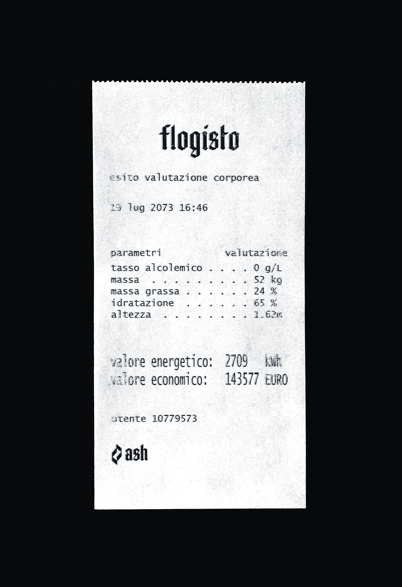
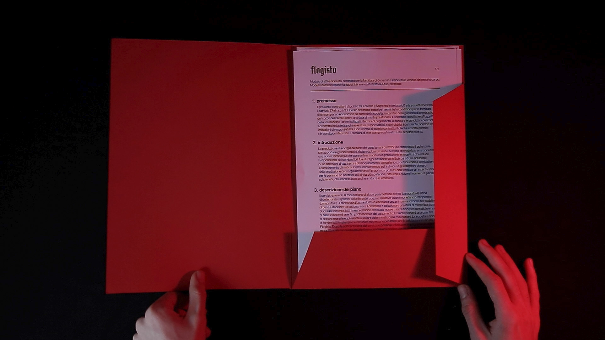
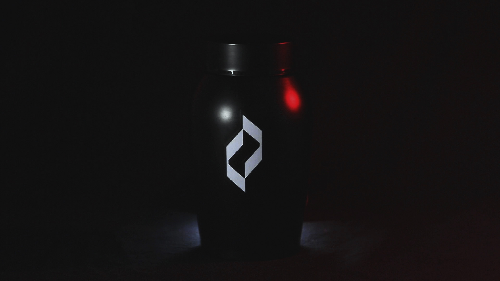

A speculative design project set in 2070, in a world where the human race has almost ran out of fossil fuel and the energetic crisis has worsened the economic gap. Flogisto is a new service offered by the company Ash, a multinational corporation that has been in the power generation business since 2050 and has found a new way to produce energy: by burning dead bodies.
Global warming and climate change have marked this century and forced us to rethink and adapt much of our lives. In 2070, due to the depletion of fossil fuels, energy is a commodity for the few and its price is skyrocketing.
Ash is an energy company founded in 2045 in response to a constantly changing world. After 40 years of experience and research, it is the first company in the world to be able to provide effective and definitive solutions to the energy crisis.
Flogisto is a service that allows everyone to earn money from the combustion of their body. Users who decide to join the service receive a financial reward based on the amount of energy that can be generated from burning their bodies.
Ash provides a dedicated measuring device that allows users to know their energy value and, consequently, their economic value. The evaluation process, that takes into account height, body mass, fat mass, hydration and alcohol level, gives out a receipt with the user's energetic value.

Following the initial evaluation, customers will be given the option to choose whether they are satisfied with their energy and, consequently, economic value. If so, they will sign a contract specifying how long they wish to live, ranging from one month to seven years. Their reward will then be paid in equal monthly instalments until their death. In order to receive their reward, the customer is required to maintain their initial energetic value.
The evaluation device is present in store and connects to the personal area of the individual customer, which allows them to always be able to track their progress to ensure a smooth end of life. Ash even proposes a range of pre- and post-mortem solutions that are part of the service, including a credit card to pay for the service itself, an obituary and an urn for the deceased.
Flogisto presents itself as a double solution: on the one hand it gives value to its users, on the other hand it helps society in the energy transition by providing a new fuel.


The device development
The evaluation device is programmed with Arduino (C++) and Javascript (mainly p5.js) and connects to a computer. The computer and Arduino UNO (the microcontroller that runs the device) communicate through the serial port. P5.js uses the library p5.serialcontrol to send data to Arduino, and the reception of the string triggers the printing function.
The evaluation process, that takes into account height, body mass, fat mass, hydration and alcohol level, gives out a receipt with the user's energetic value. Weight and alcohol level are measured by sensors connected to Arduino; height is set by the user through a slider; fat mass and hydration are calculated through the Jackson-Pollock formula and Watson's formula.
my responsibilities
Concept, speculation and scenario creation; interaction design of the machine and prototyping, including electronics and coding
team members
Giacomo Cincotti, Sarah Cosentino,
Selene Garresio, Giorgia Maggiolini,
Alessandra Palombelli, Bianca Maria Sforza